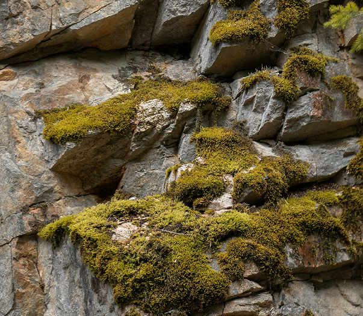
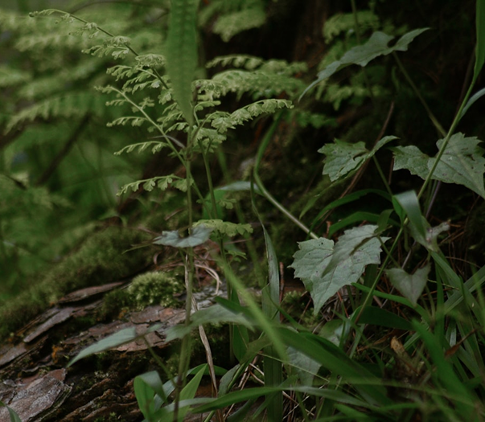
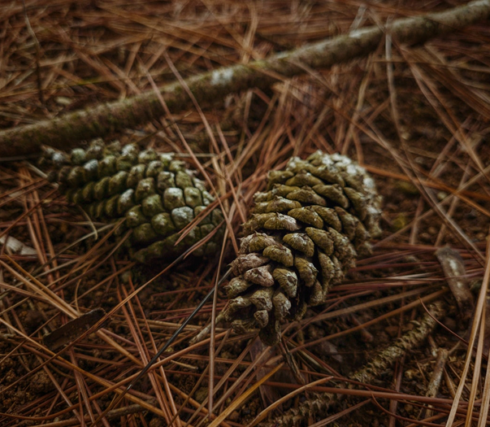
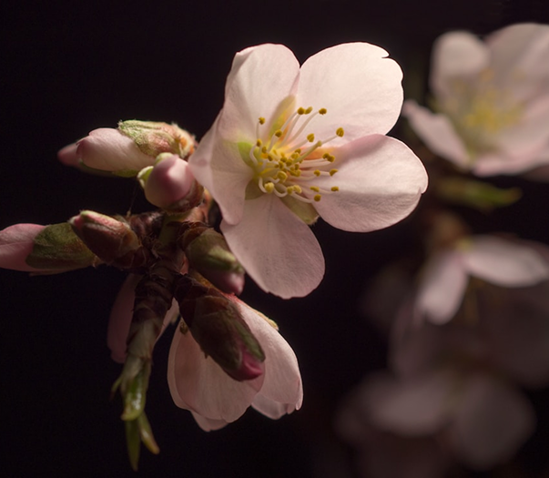

Origem das plantas
a partir das algas
Grupos das plantas
Evolução das
estratégias de
reprodução
As algas são organismos eucariontes fotoautotróficos que podem ser unicelulares ou multicelulares. Elas fazem parte do reino Protista e habitam ambientes úmidos, com a maioria sendo aquáticas, embora algumas possam viver no solo ou em árvores. Não possuem tecidos típicos das plantas, como raízes, caule e folhas.
Esses organismos são encontrados principalmente nos oceanos e possuem pigmentos que auxiliam na fotossíntese. Existem diferentes tipos de algas, como diatomáceas, dinoflagelados, algas verdes, marrons e vermelhas. As algas desempenham um papel importante nas cadeias alimentares aquáticas e na fixação de carbono.
As briófitas são as plantas terrestres mais simples. Elas vivem principalmente em ambientes úmidos e sombreados, como troncos, rochas ou solos encharcados. Não possuem vasos condutores (xilema e floema), por isso são pequenas e absorvem água diretamente do ambiente. Também não têm raiz, caule e folhas verdadeiros, apenas estruturas parecidas. Sua reprodução ocorre por esporos e depende da água para que os gametas se encontrem. O ciclo de vida dessas plantas é dominado pela fase gametofítica (haploide). Exemplos: musgos, hepáticas. Importância: ajudam na formação do solo e indicam a umidade de um local.

As pteridófitas são mais desenvolvidas que as briófitas porque possuem vasos
condutores, além de raiz, caule e folhas verdadeiros. Isso permite que cresçam mais e
se adaptem melhor a diferentes ambientes, apesar de ainda
preferirem locais úmidos.
Elas se reproduzem por esporos, que
geralmente ficam na parte de baixo das
folhas.
Embora tenham fase esporofítica
dominante (diploide), ainda precisam de
água para a
fecundação
Exemplos: samambaias, avencas, cavalinhas.
Importância: ajudam na biodiversidade
das
florestas e são usadas como plantas
ornamentais e medicinais.

As gimnospermas foram as primeiras
plantas a desenvolver sementes, o que
permitiu a
conquista de ambientes mais
secos. Suas sementes não ficam dentro de
frutos — ficam
expostas em
estruturas
chamadas cones (ou estróbilos).
Essas plantas possuem raiz, caule, folhas
verdadeiras e tecidos condutores. Suas
folhas
geralmente são duras e em forma de
agulha, adaptadas a climas frios e secos. A
fecundação
acontece por grãos de pólen,
sem necessidade de água.
Exemplos: pinheiros, araucárias, ciprestes.
Importância: são fonte de madeira, papel,
resinas e
desempenham papel ecológico
importante em florestas de clima frio.

As angiospermas são as plantas mais
evoluídas e diversificadas. Produzem
flores e frutos
que
envolvem e
protegem as sementes. Possuem raiz,
caule, folhas, flores, frutos e sementes.
Estão
presentes nos mais variados
ambientes, desde florestas tropicais até
desertos.
A
reprodução
ocorre por meio de flores,
com a ajuda de agentes polinizadores como
insetos, aves e o
vento. O
fruto protege a
semente e facilita sua dispersão. O ciclo de
vida também é dominado pela
fase
esporofítica (diploide).
Exemplos: roseiras, mangueiras, feijoeiros,
ipês, gramíneas.
Importância: fundamentais para a
alimentação humana e animal, produção de
medicamentos,
fibras,
madeira e equilíbrio
ambiental.

As briófitas, como musgos, são plantas simples que dependem da água para a reprodução, pois seus gametas precisam se deslocar nesse meio. Elas não possuem vasos condutores, por isso vivem em ambientes úmidos e de pequeno porte.


Com as pteridófitas, como samambaias e cavalinhas, surge a presença de vasos condutores (xilema e floema), que permitem maior crescimento e adaptação. Elas se reproduzem por esporos e ainda precisam de água para a fecundação, mantendo uma dependência ambiental.
As gimnospermas, como pinheiros, evoluíram para produzir sementes expostas, que protegem o embrião e facilitam a dispersão. A polinização ocorre pelo vento, eliminando a necessidade de água para a fecundação, o que permite viver em ambientes mais secos.

As angiospermas, plantas com flores, desenvolveram estratégias avançadas com a produção de flores e frutos. As flores atraem polinizadores, aumentando a eficiência da reprodução, enquanto os frutos protegem e ajudam a dispersar as sementes. Essa inovação permite grande diversidade e adaptação a variados ambientes.


A história evolutiva das plantas se remonta a um longo tempo quando organismos fotossintéticos multicelulares invadiram os continentes.

Resumo sobre o Reino Plantae para complemento das aulas. Façam anotações e, em caso de dúvidas sobre células eucariontes e procariontes, vejam o vídeo.
Com explicações claras e exemplos práticos, esta aula é perfeita para estudantes, professores e curiosos que desejam entender mais sobre a magia do mundo vegetal.